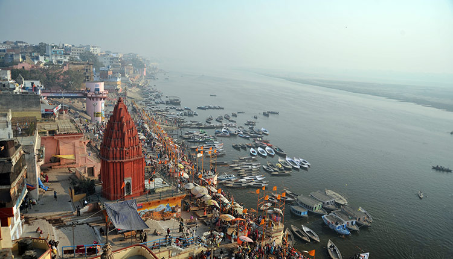

VARANASI
Kashi is the old name for the city of Benaras, now called Varanasi. The place is known to be on the banks of the
holy river Ganges, called Ganga in Hindi. Varanasi is known for its temple and the most famous temple there is
the Kashi Vishwanath temple

Back
GAYA
Nomenclature of Gaya is based on the myth of demon Gayasur who Lord Vishnu had killed in a dual. The place is so
sacred for Hindus that even Lord Ram had performed Pindadanam here for his ancestors. Legend says that Lord Ram
had come to Gaya to pay homage to his ancestors and Sita had accompanied him on his way.

Back